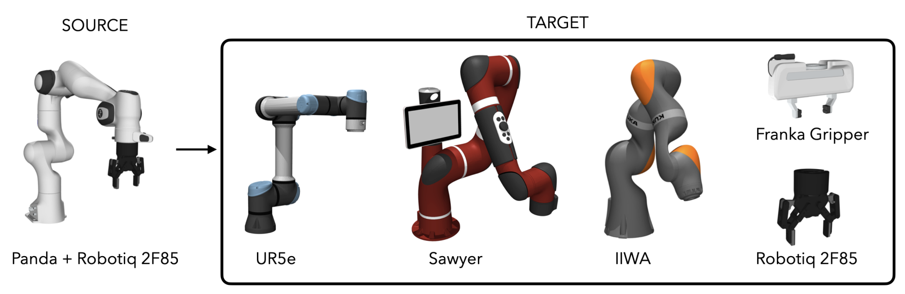
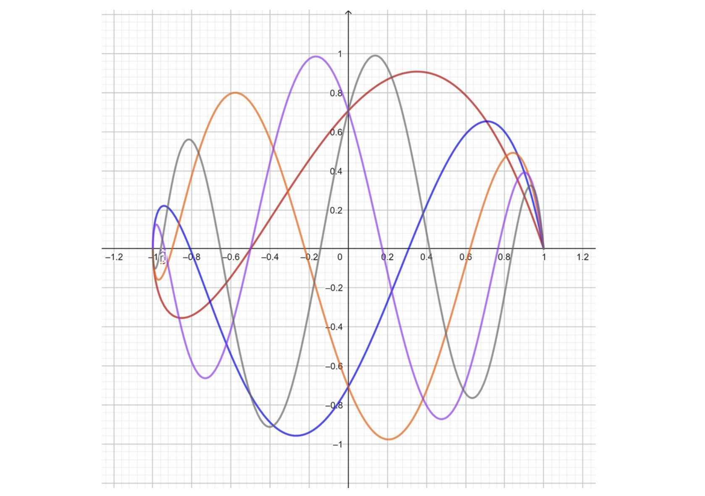
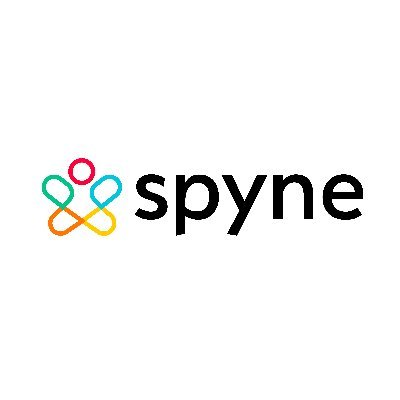
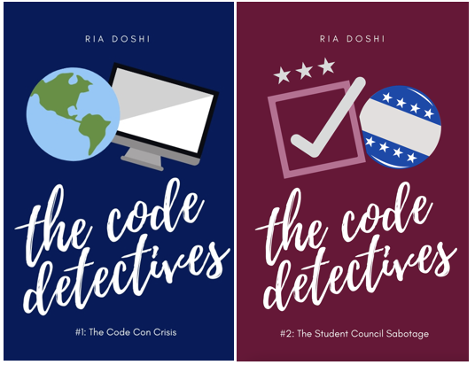

Ria Doshi
PhD @ Stanford · AI/Robotics
I'm a CS PhD student at Stanford University, grateful to be advised by Jeannette Bohg. My research focuses on building generalist, embodied intelligence. I completed my undergrad at UC Berkeley, where I was fortunate to be advised by Sergey Levine. I also spent a lovely summer working on autonomous driving models at Wayve AI. My research is supported by the NDSEG Fellowship and the Stanford Graduate Fellowship.
I'm always happy to chat about research or otherwise — feel free to reach out and say hi!
Publications
Scaling Cross-Embodied Learning: One Policy for Manipulation, Navigation, Locomotion and Aviation
Ria Doshi*, Homer Walke*, Oier Mees, Sudeep Dasari, Sergey Levine
(Oral Presentation) Conference on Robot Learning (CoRL) 2024
Webpage •
PDF •
Code

Shadow: Leveraging Segmentation Masks for Cross-Embodiment Policy Transfer
Marion Lepert,
Ria Doshi,
Jeannette Bohg
Conference on Robot Learning (CoRL) 2024
Webpage •
PDF
Dexterous Manipulation from Images: Autonomous Real-World RL via Substep Guidance
Kelvin Xu*, Zheyuan Hu*,
Ria Doshi,
Aaron Rovinsky, Abhishek Gupta, Vikash Kumar, Sergey Levine
International Conference on Robotics & Automation (ICRA) 2022
Webpage •
PDF

PolyGround: Towards a Playground for Large Language Model Alignment & PEFT Using Polynomial Regression
Ria Doshi*, Morten Svendgård*, Max Wilcoxson*, Dylan Davis*, Reya Vir, Anant Sahai
International Conference on Machine Learning (ICML) Workshop 2024
Webpage •
PDF

Octo: An Open-Source Generalist Robot Policy
Dibya Ghosh*, Homer Walke*, Karl Pertsch*, Kevin Black*, Oier Mees*, Sudeep Dasari, Joey Hejna, Tobias Kreiman,
Ria Doshi,
Charles Xu, Jianlan Luo, You Liang Tan, Lawrence Yunliang Chen, Pannag Sanketi, Quan Vuong, Ted Xiao, Dorsa Sadigh, Chelsea Finn, Sergey Levine
Robotics, Sciences & Systems (RSS) 2024
PDF •
Code

Open X-Embodiment: Robotic Learning Datasets and RT-X Models
Open X Embodiment Collaboration et. al.
International Conference on Robotics & Automation (ICRA) 2023
Webpage •
PDF
Work
ML Research Intern, Wayve AI
My work focused on building LINGO, towards a vision-language-action model for autonomous driving. I was involved with building a large-scale inference pipeline using Kubernetes, improving road-signal perception capabilities, and data curation for referential segmentation.
Project Webpage

ML Consultant, Spyne AI
I developed high-fidelity, 3D renderings of cars using NERF models for smarter, more efficient online marketing. Implemented interpolation & feature matching techniques for output consistency across varying input dimensions.
Talks
2024
Oral presentation — Scaling Cross-Embodied Learning
Conference on Robot Learning (CoRL)
2024
Invited talk
Google DeepMind
2024
Invited talk
Blog
More

Author, The Code Detectives Book Series
I've always loved reading mystery novels, especially when I was younger... so I decided to write two of my own :) The Code Detectives is about two friends who use coding & AI to solve neighborhood mysteries. Writing the books was an eye-opening and pretty cool experience.
Book 1 •
Book 2
I also love basketball and frequently cheer on the Golden State Warriors!